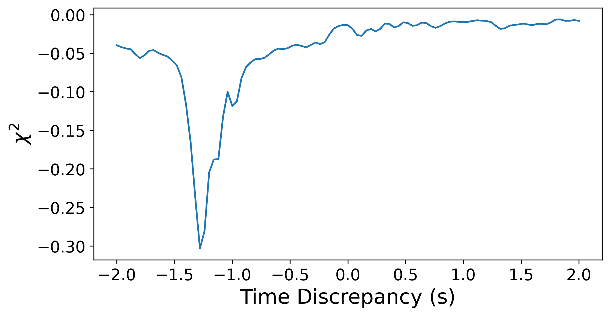

3 UTC Timing
3.1 The UTC timing problem
Now that we have aligned the spectra, we must consider the absolute time at which we have recorded the data. This amounts to assigning a proper UTC time to the reference antenna spectra (and therefore to the rest of the consequently aligned timestreams). The reason for this is that to isolate clock delay, we must first remove the satellite's geometric delay. We know the exact satellite positions, so removing geometric delay is a simple exercise in, well, you guessed it, geometry. However, we don't know what actual abolute UTC time the data in our antenna corresponds to. That means any estimate we make of satellite position incurrs some error, and therefore some delay offset. Depending on the geometry of the setup, this may be a large error. For example, consider XXXX
(insert example derivation)
Thankfully, they are all reasonably closely aligned with respect to each other (by spectrum), so we can just find a single net UTC offset that will best fit the entire setup. To better visualize what is happening, we can draw up the two alignments that must be made. De-coupling spectrum alignment and UTC alignment is a useful conceptual notion to keep in mind, as they are very separarate ideas and methods.
(insert the double-alignment figure)
3.2 On Upchannelization
Before the UTC analysis, we re-channelize our data into finer channels. This data is used throughout the rest of the pipeline. We upchannelize using a re-PFB pipeline written by Mohan, found in '/scripts/xcorr'. The re-PFB script that is mainly used in this pipeline is 'fine_timing.py', but the engine for this is found elsewhere in the same directory.
We usually upchannelize by a factor of 64, meaning channels are about 1 kHz wide. Thus, since METEOR satellites we have between 80 and 100 kHz of bandwidth, we have 80-100 channels of signal.
We use the recorded pulse times from 'pulses.json', alongside the spectrum alignment to generate the upchannelized data for each pulse. We now record the spectrum number of the first spectrum used in the upchannelized data of the reference antenna (to which, if you recall, all other antenna timestreams are aligned), and keep it in the same 'pulses.json' file. This spectrum number is now anchored as the starting point of the pulse, as the upchannelized data starts at that point. Also notice that we are upchannlizing, meaning that each new spectrum contains 64 old spectra: we sample less often in time. (we have to be careful with spectrum number indexing; it's our only reliable measure of data poition in time, but we can easily get confused).
The data is stored in the '/batchX/data' folder, and is named according to the rounded pulse time found in the pulses.json file. Note that these do not contain much information about the exact time of the pulse, but instead serve more as an indexing tool to facilitate naming and differentiating pulses.
3.3 Absolute Alignment (UTC)
Now that we have upchannelized, high SNR, spectrally aligned antenna data, we might think that we are done. Alas, no. To isolate clock delay, we must first remove the satellite's geometric delay. We know the exact satellite positions, so removing geometric delay is a simple exercise in, well, you guessed it, geometry. However, we don't know what actual abolute UTC time the data in our antenna corresponds to. That means any estimate we make of satellite position incurrs some error, and therefore some delay offset. Depending on the geometry of the setup, this may be a large error. For example, consider XXXX
(insert example derivation)
Thankfully, they are all reasonably closely aligned with respect to each other (by spectrum), so we can just find a single net UTC offset that will best fit the entire setup. The question is, how do we localize our data in UTC time?
We fit on unwrapped phases. We expect the only major drift in unwrapped phases (more significant than clock noise) to be the residual drift experienced by the visibilities due to the growth in offset between actual position and beamformed position. The fit is performed with respect to the starting time in the pulses.json file. The fitted time is then the difference with with respect to that time.
Since we fit on unwrapped phases, we must first cut the pulse such that unwrapping issues do not corrupt the fit. Since we are not aligned to UTC time yet, and we are cut by visibility amplitude. Use XXXX to get best continuous 2 minutes. Results saved in '/data/cutting_UTC.json' so as to facilitate repeated runs for the same pulse.
The fitting cost surface typically looks something like this:

3.4 UTC Mapping
Once we have a fit for each pulse throughout the batch, we want to find a single mapping between UTC time and pulses. Clock drift does not exceed a couple microseconds over the course of a batch, so to extremely good approximation UTC time and spectrum number can be related by a linear relationship. Using the starting fitted starting time and starting spectrum number as our data, we can fit a line and get a best fit mapping to get from spectrum number to UTC time. This is the mapping we use to determine UTC time throughout the entire batch. The fit (with residuals) looks something like this:
(INSERT FIT AND RESIDUALS FIGURE)